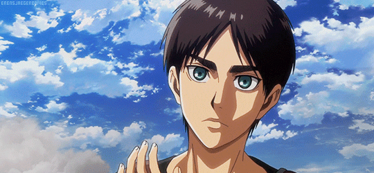

Eren est un petit garçon rêvant de voyager dans le monde extérieur. Mais cela est impossible car il vit dans une ville fortifiée aux murailles dépassant les cinquante mètres de haut. Ces remparts sont nécessaires à la sécurité des habitants car ils sont les derniers représentants de l'humanité, obligés de se cacher pour échapper aux titans qui ont massacré la majeure partie du genre humain un siècle plus tôt. Eren est têtu : il ne se doute pas de la violence des combats qui ont opposé les hommes aux titans. Il décide de poster sa candidature pour devenir éclaireur, car il s'agit des seuls soldats autorisés à sortir de la ville pour en savoir plus sur les titans. Mais un beau jour, un géant parvient à détruire le mur qui protégeait la ville et ouvre la voie à plusieurs dizaines de ses congénères ! Eren assiste impuissant à la mort atroce de sa mère qui finit dévorée. Alors qu'il fuit avec d'autres survivants, il se jure de se venger et de détruire la race des titans jusqu'à ce qu'il n'en reste plus un seul !!
